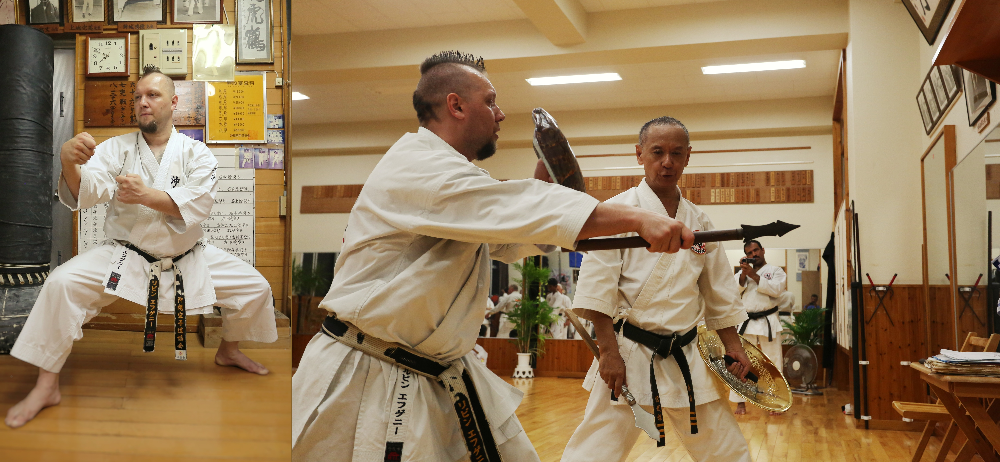

Окинава Уэчи рю каратэ
沖縄上地流唐手
沖縄上地流唐手

Этот удивительный и необычный стиль, появился последним из трех главных стилей Каратэ, на главном острове королевства Рюкю. Парадокс стиля в том, что наряду с такими сильными и крупными стилями Каратэ как Годзю рю и Серин рю, стиль Уэчи рю, появился последним на острове Окинава, и сохранил свою самобытность и оригинальность. Таким образом, стиль Уэчи рю является самым молодым из трех крупнейших стилей на Окинаве и в то же время, стиль использует древние техники и принципы, неизменные временем. Он в наименьшей степени подвергся влиянию спорта, сохраняя боевую и прикладную направленность.
Стиль Уэчи рю Каратэ, имеет удивительную историю, испытание временем, периоды трансформации, этапы развития, наследие поколения Гранд Сэнсеев.
Из неизвестной Южно-Китайской школы Пангай Нуун, позднее переименованной в честь Окинавского Мастера Канбуна Уэчи «школа Уэчи рю», этот стиль получил широкое распространение по всему миру, Азии, Европе, Латинской Америке, США.
Стиль, получил оформленное завершение в 60-ые годы прошлого века, окончательно сложившись в хорошо структурированную школу Каратэ. Уэчи рю Каратэ имеет в арсенале школы, все для создания сильного, быстрого, хорошо подготовленного для уличной схватки каратиста.
Принципы боя и ведения поединка, представители стиля Уэчи рю, используют логическое посредство техник. Благодаря скорости каратист Уэчи рю, обладает хорошей подвижностью и маневренностью, имеет в арсенале быстрые и точные удары. Закаленное и мощное тело, дает ему способность физически и психологически выдерживать удары в наиболее уязвимые части тела. Универсальные техники стиля дают ему преимущество эффективно использовать защиту и контратаку в поединке.
В стиле используется концепция трех животных «Тигр, Журавль и Дракон». Техники, имитирующие ударные поверхности этих животных, повадки, присутствуют в каждом движении. Шокен (яп. первый кулак) ударная поверхность руки «зуб тигра» являлась визитной карточкой стиля Пангай Нуун, и долгое время была эмблемой стиля Уэчи рю. Бошикен (яп. большой (главный) палец) ударная поверхность руки «коготь дракона» имитирующая лапы дракона, является эффективным средством нападения и защиты (используется только в стиле Уэчи рю, и не имеет аналогов). Какушикен (яп. клюв кулак) ударная поверхность в форме «клюва журавля» (есть версия что раньше это было движение кобры наносящей удар, используется только в стиле Уэчи рю и не имеет аналогов). Позиции (стойки и положения рук «камаэ») демонстрируют прямую связь с Китайскими школами и связь с подражательной техникой животных.
Мастера Уэчи рю демонстрируют невероятные способности в разбивании предметов (тамешивари), это является визитной карточкой стиля.
Итак, на мой взгляд, стиль Уэчи рю имеет все для формирования, хорошо подготовленного физически и психологически, каратиста.
Мастера Уэчи рю каратэ
Сю Си Ва 周子和 (кит. Чжоу Цзы Хе, род. 1874- умер 1926) Чжоу Цзы Хе (Окинавск. Сю Си Ва) был учеником Мастера Ли Джао Бей (его дядя по отцу) Китай, провинция Фуцзянь, г. Фучжоу. Стиль Пангай Нуун, который преподавал Чжоу Цзы Хе, включал в себя три ката: Санчин, Сэйсан и Сансэйрю. Стиль Мастера представлял собой, смесь стилей Тигра, Журавля, Дракона. Мастер обладал колоссальной физической силой, развитой посредством постоянной практики ката Санчин. Один из учеников (Сю Си Ва) Чжоу Цзы Хе это его племянник Чжоу Чженгун (1888 – 1968) а далее, ученик Чженгуна – Мастер Гуо Конгкси (1904-2002)
Канбун Уэчи上地完文 (род. 5 мая 1877 – умер 25 ноября 1948) родился 5 мая 1877 г. в деревне Идзуми на о.Окинава. Канбун Уэчи 11 лет изучал стиль Пангай Нуун в Китае (г.Фучжоу) у китайского Мастера Сю Си Ва 周子和 (кит. Чжоу Цзы Хе), Помимо изучения кэмпо (боевого искусства), Уэчи Канбун изучал у Мастера Чжоу Цзы Хе фармакологию и фитотерапию (лечение травами). Весной 1904 г. Чжоу Цзы Хе объявил Уэчи Канбуна полноправным Мастером школы Пангай Нуун. Несмотря на это, еще в течении 3 лет, Канбун продолжает изучать кэмпо Мастера Чжоу Цзы Хе и травную медицину.
Канэй Уэчи上地完英 (род. 26 июня 1911 – умер 23 февраля 1991). Сын Легендарного Канбуна Уэчи – Патриарха стиля, (человека кто привез стиль Пангай Нуун, а после переименованного в каратэ Уэчи рю). Канэй Уэчи Сэнсей, является создателем того, что мы имеем на сегодняшний день, Он систематизировал стиль, создал поэтапную систему обучения. Самое главное, на мой взгляд, он оказал самое существенное влияние на основную плеяду Мастеров на Окинаве, кто развивает ныне стиль Уэчи рю в Мире и на Окинаве. В феврале 1967 года, Японская федерация каратэ награждает Мастера Уэчи Канэй степенью "Дзюдан (Ханши 10 Дан), официальное признание как Мастера Уэчи рю каратэ. В апреле того же года, Дзен-Окинава Каратэ-до Ренмэй (Всеокинавская Каратэ Федерация) так же, награждает Мастера Канея Уэчи единогласным решением. Позднее, в 1975, Мастер Kaнэй был избран президентом этой ассоциации.